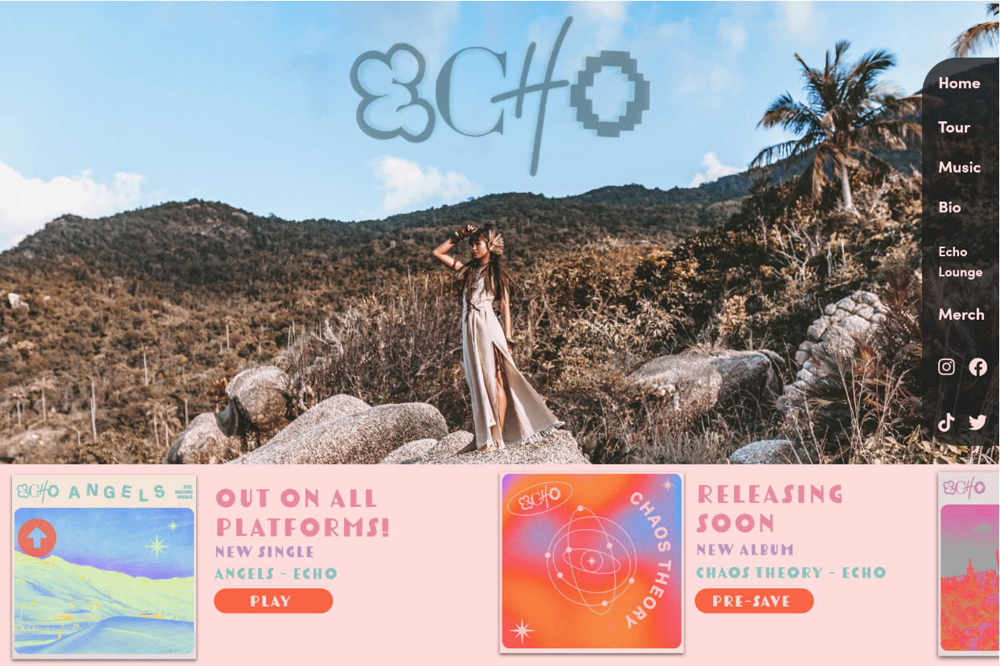
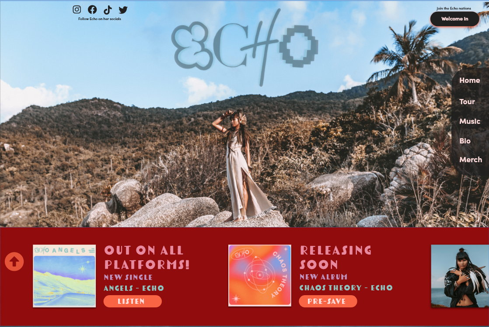
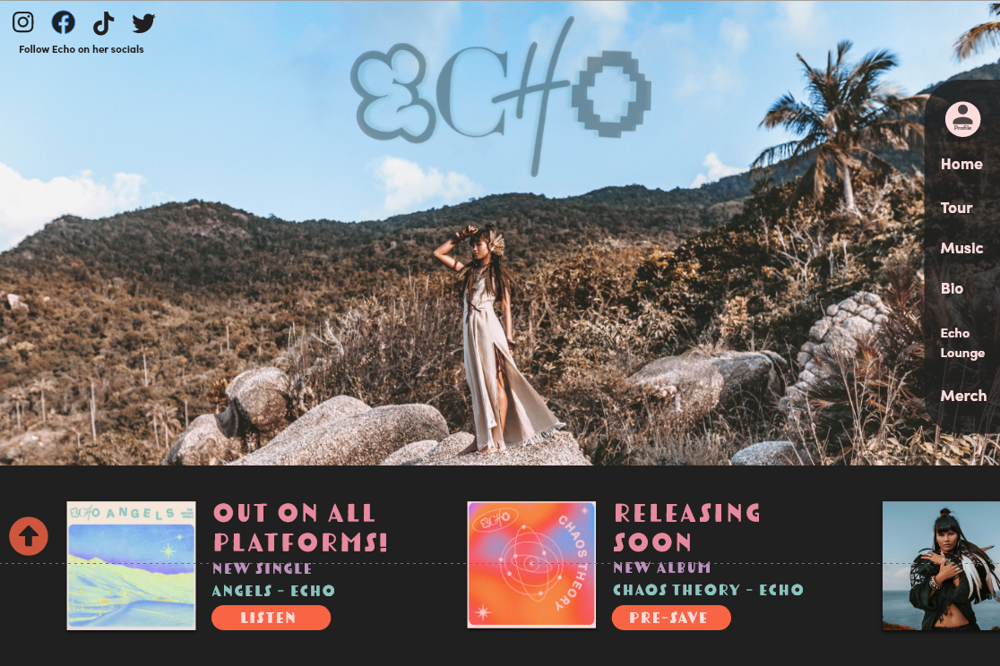
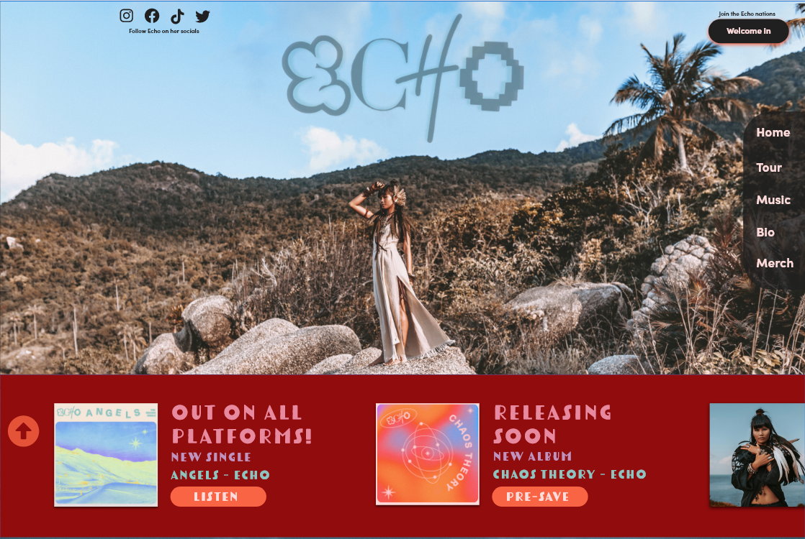
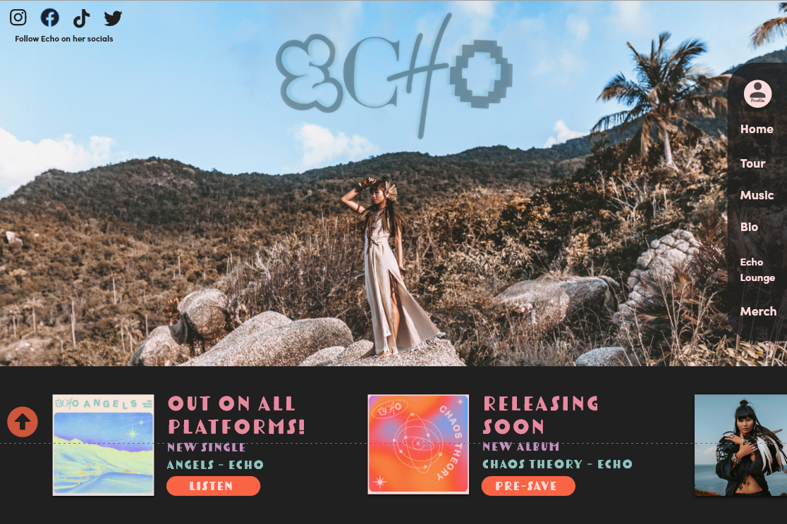
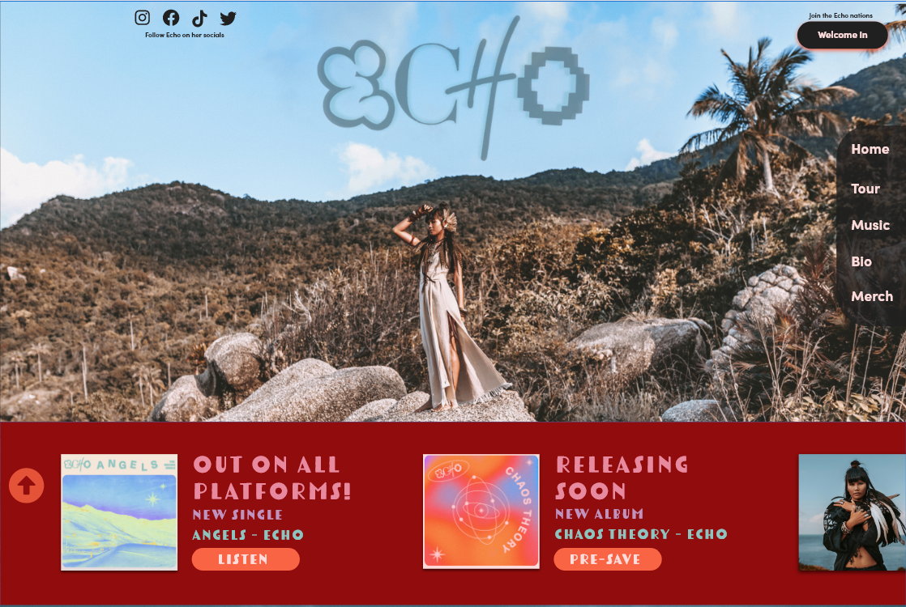
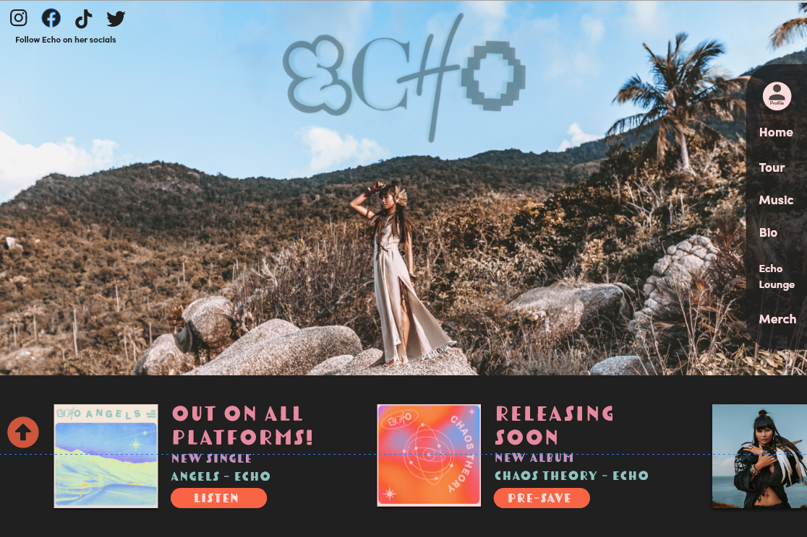
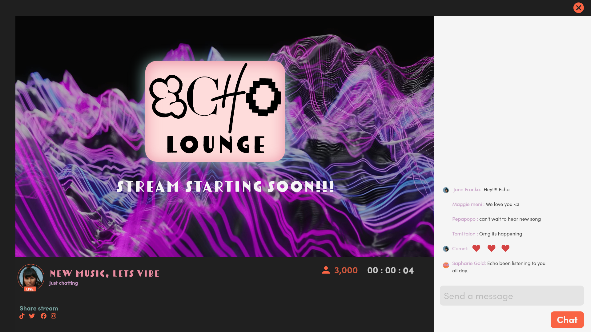

Objective
Develop an up-and-coming (fictional) artist website to promote the release of the album and tour.Showcasing a fun biography, about the artist is key for appealing to the fanbase. “echo” for seo is a nightmare, ensure that the design provided has echo spread throughout it as much as possible.
Target Audience:
- 15-28 year old non-binary or female identifying
- Favorite season is summer
- Wears crop tops or big t-shirt and mom jeans
- Favorite time of day is late night
- Uses TikTok, Snapchat & Instagram
- Communicates in abbreviations
Key Feature:
- Artist journey page
- social media is readily available
-
splashes of echos personality and taste throughout the website
- artist news page on landing
- awards
- sales/merch.
Drafts
Stakeholder requested to keep the site 1 to 3 pages Max. I came up with swift layout and played with vibrant colors. The color drafts takes inspiration from the supplied album art, making sure the key features are displayed on right side nav bar for easy acess. Usually nav bars are placed at the top, but since the requested landing page image had a centered logo; it was better to be put on the sides to prevent obstruction.

 





Content Inventory
Most of the content is on the home page with external links for merch, music videos and buying tickets. The second page Echo lounge that enables users watcha live stream from the artist on the website.
Home Page
- Artist Social Links
- Latest Music Ad Banner
- Tour Dates/Information
- Music Catalog (songs, videos, post production)
- Fan reward system
- Artist Bio
- Echo Lounge
- Merch
Echo lounge
- Live video layout
- Chat box & display
- Stream count & duration
- Share stream links
User Testing Process:
User Interviews - approx 10 mins
User Qualitative Survey - approx 4 mins
Usability Report:
PRE-SAVE Button:
Users were confused about the PRE-SAVE button, an insight is: to
incorporate clarity on what PRESAVING does for the user in the
design so both business and user needs are met.
Tour Information:
Users more often go to artist’s websites for tour information,
insight is: to provide tour date information and ticket purchasing
that is quickly and easily accessible for the user.
Reward System:
Users need to have some sort of connection with the artist and/or
an incentive to PRESAVE their music, insight is to reward them so
the user feels some level of satisfaction.
Click Through Rate:
Users don’t spend a long time on an artist’s website, an insight
is: to provide a minimal amount of screens so the user can locate
their needs all in one location.
Available Media:
Users love to watch music videos, the insight is to add music
videos to the website for the user to enjoy and connect with Echo.
Website Preview
Preview of the main page and a link to a prototype